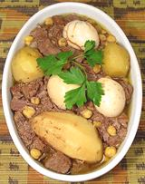

|
Sefrina with BeefJewish - Morocco - Sefrina | ||||
| Serves: Effort: Sched: DoAhead: |
5 main ** 16+ hrs Must |
Observant Jews are forbidden to work on the Sabbath, and that includes lighting fires and cooking. The work-around is stews set up before sundown the day before, and left to cook slowly for as long as 18 hours. See History. | |||
|
1/2 2 1-1/2 3 ------ 1 1/3 1/3 1/3 1/2 ------ 4 |
c # # --- cl t t t T --- c |
Chickpeas dry Beef & Bones (1) Potatoes Eggs, in shell (2) -- Seasonings Garlic Pepper, black Ginger, ground Turmeric Salt ----------- Boiling Water |
Since few people today have a big pile of culinary grade hot ashes around the house, electric slow cookers and similar devices are now used, or a very slow oven. This recipe is sized to just fit into a 5 quart slow cooker.
|